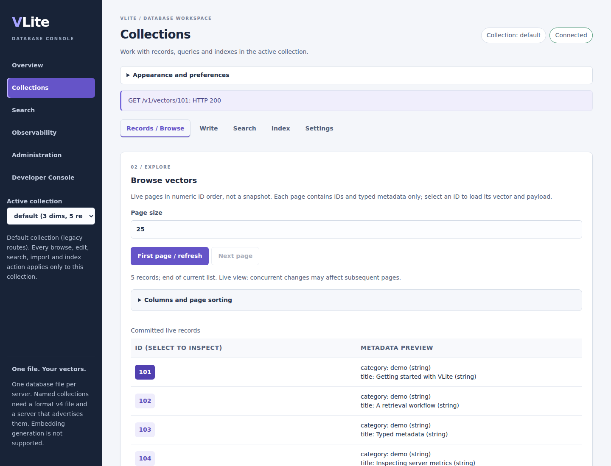
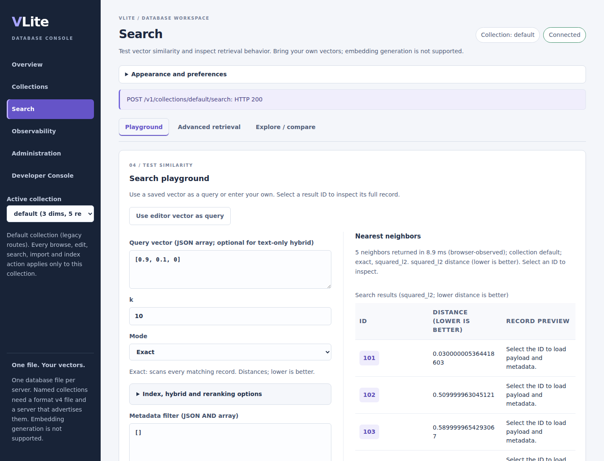
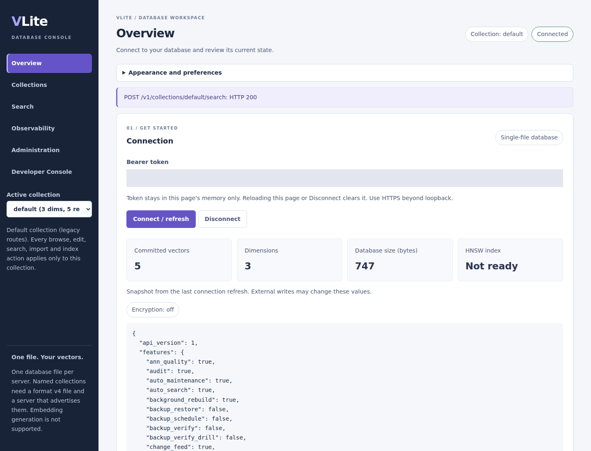

Your database, in focus
Browse collections, inspect records, run vector searches and monitor your VLite server in one web interface.
This is the dashboard product and setup page, not a hosted database or public live console. Run your own instance using the instructions below.
See the dashboard in action
Three short animated PNG tours, captured from the official v0.4.1 container with five synthetic records in an isolated database. Each tour advances through real workspace captures once. These are representative workflows, not a live console or an exhaustive demonstration of every control. Metrics and timings are demo activity, not benchmarks.
Nothing plays automatically. Select Play to load an animation, or open its still image for a closer look. Reduced-motion preferences keep the tours static.


1. Collections and records
Browse records, inspect metadata and vectors, then explore the write editor, index controls and collection settings. Editor and settings frames show the controls; they do not demonstrate mutations.


2. Search and inspection
Run an exact query, inspect a returned record, then run approximate search against the same tiny dataset. Bring your own vectors; the dashboard does not generate embeddings.


3. Database operations
Move between Overview, Observability, Administration and Developer Console. Review server activity and discover maintenance and request-inspection controls without executing destructive operations.
More full-size screenshots
Collection browsing and record inspection · Search results and payload inspection · Metrics and route counters


Earlier development captures of the dashboard included in v0.4.1, also using five synthetic records.
Run locally from source
Clone the repository and follow the installation guide. From its root, with Docker running, prepare the API configuration and private token using the Docker REST quickstart. Then build both services from the current checkout:
docker compose --profile dashboard up --build -d api dashboardOpen http://localhost:8081 for the standalone UI, or
http://localhost:18084/dashboard for the embedded UI.
Paste your existing .secrets/api-token value into the connection field.
These addresses refer to your own machine and only work after startup.
The standalone frontend proxies authenticated requests to the API; both views use the same database. Tokens stay in page memory and are cleared on reload or Disconnect. Keep the default loopback bindings; use the documented HTTPS deployment before remote access.
From records to operations
These workspaces are included in v0.4.1; older v0.3.0 images do not include every feature. Check the release publication before selecting images.
Collections and record editing
Six workspaces with Records, Write, Search, Index and Settings collection tabs. Inspect Payload, Metadata, Vector and Raw JSON views, edit typed metadata and review explicit mutation confirmations.
Search and ingestion
Exact and ANN search, typed filters, validated JSON writes, bounded import/export and copy-as-code. Failed search refreshes retain prior results with an explicit error.
Metrics and live logs
Request/search rates, latency percentiles, route tables, sparklines and filtered JSONL log exports. Global metrics/log views require a bootstrap admin token. Logs are a bounded, memory-only ring, not a durable archive.
Administration and developer tools
Inspect health and credentials, review maintenance operations and inspect API requests. Follow the administration guide for permissions, backups and operational safeguards.
Know the boundaries
The dashboard does not generate embeddings. Writes replace records and require confirmation. Stopping a browser wait does not cancel server work or retry it. For offline workflows, use the VLite CLI tools; stop the server before opening its file with an exclusive-lock tool.